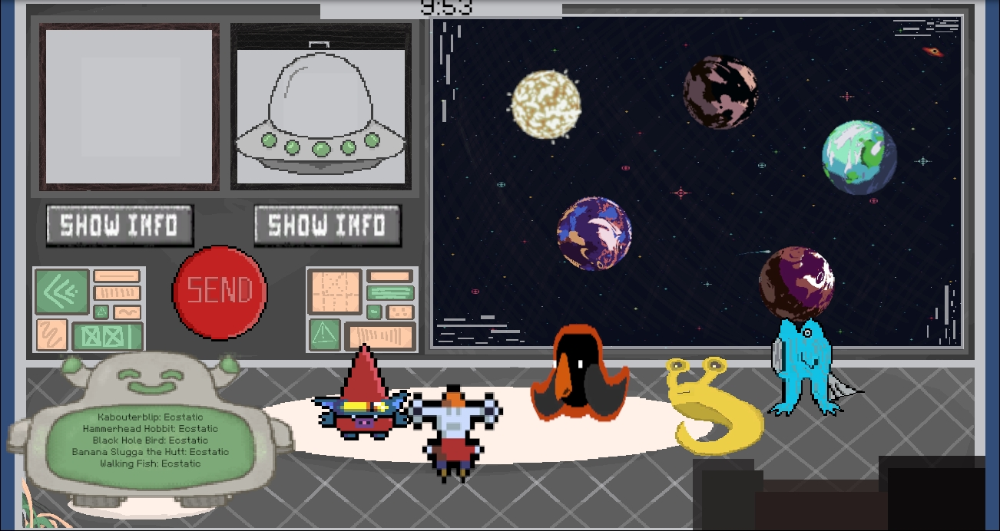
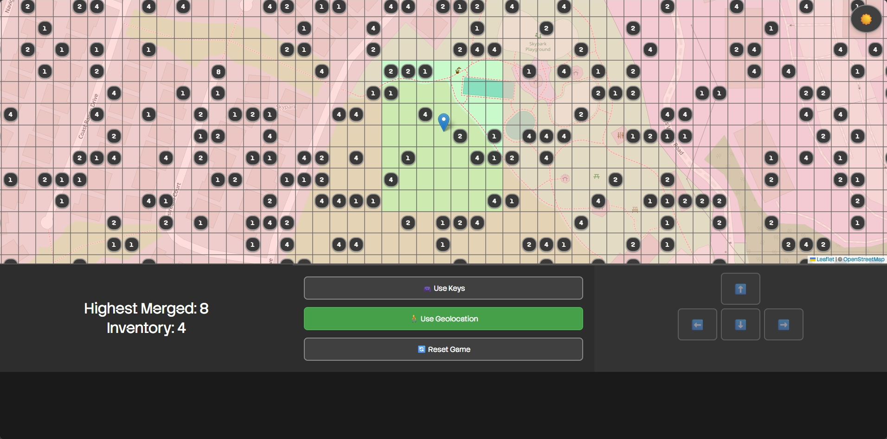
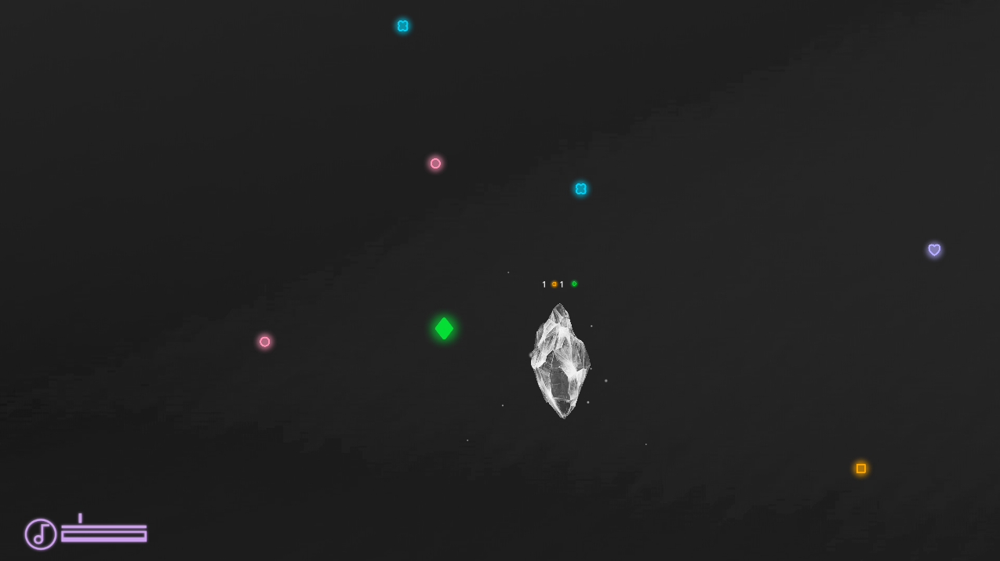

Featured Projects
S.P.A.C.E.
A space themed game based on real world data and research built with Unity. Created in a team of 3.

Drawing Sketchpad
A drawing sketchpad created entirely in Javascript (with CSS styling).

World of Bits
A real-world gelocation based game (best suited for phone) where players can walk around to merge their tokens. Created with Javascript and CSS.

Orbomancer
A quick, matching based game where players collect orbs and match them to crystals based on color. Created in a team of 4 in Godot.

Becoming a Mouse
A game about becoming a mouse, traversing a maze of pipes and a dangerous cat to get to your dinner. Created with Godot.